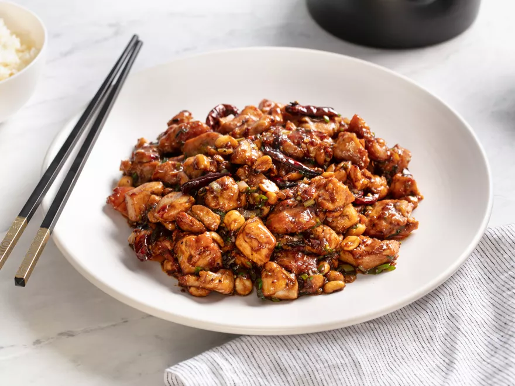

Recipe and Image from Serious Eats
Combine chicken, 2 teaspoons soy sauce, 2 teaspoons Shaoxing wine, and 1 teaspoon cornstarch in medium bowl and mix thoroughly. Allow to marinate in fridge for at least 30 minutes, and up to two hours.
Grind half of Sichuan peppercorns in mortar and pestle. Combine with scallion greens and reserve. Combine scallion whites, garlic, and ginger in small bowl. Combine remaining soy sauce, remaining Shaoxing wine, remaining corn starch, black vinegar, chili-bean paste, and sugar in small bowl and mix until cornstarch is fully dissolved.
Set fine-meshed strainer over small heat-proof bowl. Heat peanut oil in wok over high heat until shimmering. Add remaining Sichuan peppercorns and dried chiles and cook until fragrant, about fifteen seconds. Drain in strainer. Pick out chiles and reserve. Discard peppercorns.
Return wok to high heat until smoking. Add 1/4 of oil and immediately add half of marinated chicken. Spread in even layer with spatula. Cook without moving for 1 minute, then cook, stirring and tossing constantly until barely cooked through, about 1 minute longer. Transfer to a medium metal bowl. Wipe out wok with paper towel, add another 1/4 of oil, and repeat with remaining chicken. Wipe out wok with paper towel, add another 1/4 of the oil, and cook leeks until charred in spots but still slightly crisp, about 1 minute. Add peanuts, reserved chiles, reserved chicken, and remaining oil to wok and push to side to make space in the center of the wok. Add garlic/ginger mixture and cook, stirring mixture constantly until aromatic, about 15 seconds. Toss entire contents of wok together and add sauce. Cook, stirring and tossing constantly until chicken is coated in glossy layer of sauce. Stir in scallion greens and ground Sichuan pepper. Transfer to serving plate and serve immediately with steamed white rice.